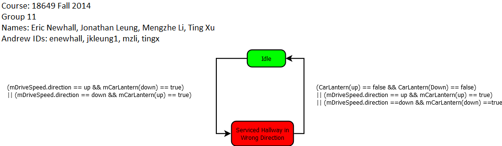

Event Triggered statechart:





| Acceptance
Test Name |
Verification
Status |
Link to
Verification Results |
Notes |
| proj7acceptance1.pass |
fail |
proj7acceptance1.stats |
Failed Requirements: R-T.6, R-T.7 Failed Monitor: Runtime Monitor Failed Reason: HallButton turns off too early, doors remain cycling when there is no pending car/hall calls |
| proj7acceptance2.pass |
fail |
proj7acceptance2.stats |
Failed Requirements: R-T.6, R-T.7 Failed Monitor: Runtime Monitor Failed Reason: HallButton turns off too early, doors remain cycling when there is no pending car/hall calls |
| proj7acceptance3.pass |
fail |
proj7acceptance3.stats |
Failed Requirements: R-T.6, R-T.7 Failed Monitor: Runtime Monitor Failed Reason: HallButton turns off too early, doors remain cycling when there is no pending car/hall calls |
| proj8group11acceptance1.pass |
fail |
proj8acceptance1.stats |
Failed Requirements: R-T.6, R-T.7 Faild Monitor: Runtime Monitor Failed Reason: Sabbath mode stops at all floors |
| .... |